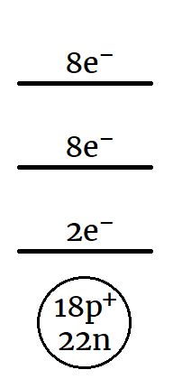
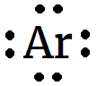
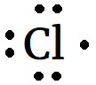
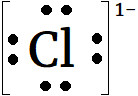
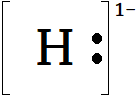

Periodic Table
Periodicity is the idea that the physical and chemical properties of elements seem to repeat on a regular basis.
- For example, He, Ne, Ar, Kr, Xe and Rn are all gases (even at extremely cold temperatures) and do not participate in chemical reactions.
- These gases are called the noble gases (or inert gases).
- Dmitri Mendeleev (1869) listed all elements known at the time in order by atomic number.
- More elements were added as they were discovered.

Periodic Table
- Not only do the properties of noble gases repeat, elements within any of the columns have properties similar to each other.
- For example, most elements in “Group 1” (the first column) are highly reactive metals that form ions with charge 1+.
- The elements in “Group 17” are gases that form ions with charge 1– and react with Group 1 to form salts.
- Rows are called periods and columns are called groups or families.
- Periods 6 and 7 contain 32 elements each. To save space, parts of these rows are usually drawn below the main part of the table.
- Mendeleev was able to predict the existance and properties of elements that had not yet been discovered (e.g. Ga and Ge) by observing missing spots in the table.
Groups
Some groups are given names as well as group numbers:
- Group 1 are the alkali metals.
- Group 2 are the alkaline earth metals.
- Groups 3-12 are the transition metals.
- Group 17 are the halogens.
- Group 18 are the noble gases.
Staircase
The periodic table has a staircase that runs diagonally starting at boron.
- The staircase separates metals (left side) from non-metals (right side).
- Elements to the left of the staircase tend to form positive ions.
- Elements to the right of the staircase tend to form negative ions.
- Elements adjacent to the staircase are called metalloids; they have some metallic and some non-metallic properties.
Things to Know...
- Hydrogen is weird! It is the only element that forms both positive and negative ions. It belongs to group 1 and group 17.
- The periodic table is often colour-coded to show which elements are metals, metalloids, or non-metals, and which are solid, liquid, or gas under standard temperature and pressure.
- Some elements do not have any naturally-occuring isotopes and must be created in the lab.
- Synthetic elements do not have an average mass number like natural ones do.
Energy Levels
The layout of the periodic table is related to the energy levels of the Bohr Model.
- There are two elements in period 1 because the first energy level can accommodate two electrons.
- There are eight elements in periods 2 and 3 because those energy levels can accommodate eight electrons.
Lewis Dot Diagrams
A Lewis dot diagram or electron dot diagram is an illustration of an atom’s valence electrons.
- The noble gas argon has an atomic number of 18. Its energy level diagram looks like this:

- The dot diagram illustrates the eight valence electrons as dots.

- Atoms prefer to have filled valence levels.
- Argon (and all other noble gases) have filled valence levels to start with.
- This is why they don’t react or form ions; they are happy with the electrons that they already have.
Lewis Dot Diagrams
- Group 17 elements like chlorine, are one electron short of have a filled valence.


- To fill its valence level, chlorine (and other Group 17 elements) need to gain one electron.

- This is why group 17 elements form ions with a charge of 1–.
Lewis Dot Diagrams
- Group 1 elements like sodium have only one electron in their valence level.


- It is easier for them to lose that one electron than to gain seven.

- This is why group 1 elements form ions with a charge of 1+.
Lewis Dot Diagrams
There may be more than one way to arrange the valence electrons:
- Since electrons repel each other, they will not “pair up” unless there is no room to remain “unpaired”.
- For periods 2 and 3 (where the maximum valence is 8), draw the first four electrons in separate positions (left, right, top, bottom) and only begin pairing when there are five or more.
Hydrogen & Helium
Hydrogen and helium (period 1) are different because the first energy level can hold a maximum of two electrons.
- The two electrons in helium have no choice but to be paired.

- Hydrogen has a single valence electron, just like the group 1 elements.

- Hydrogen can give up its electron to form an ion with charge 1+, just like group 1.

- Hydrogen is also like group 17! It can fill its valence shell by gaining one electron.
